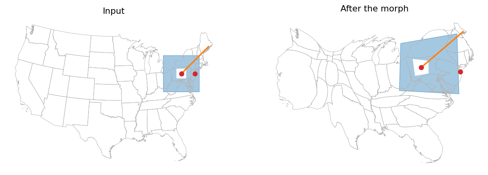

Landmarks can combine points, lines and polygons (with holes, multi-part geometries and empties); on main this raised "Point geometries are not supported". Landmark coordinates are now read and written with shapely.get_coordinates and set_coordinates, which also rebuilds the landmark geometries of each snapshot about 30 times faster. Z values are dropped. The figure shows a point, a line, a polygon with a hole and a multipoint carried through a morph of the US states.
make_figures.py runs the case in a checkout of main (before) and of the fix (after) and writes the figure and data/tables.md.

Left: the landmarks in the input map. Right: the same landmarks after the morph; the types, the hole and the order are preserved.